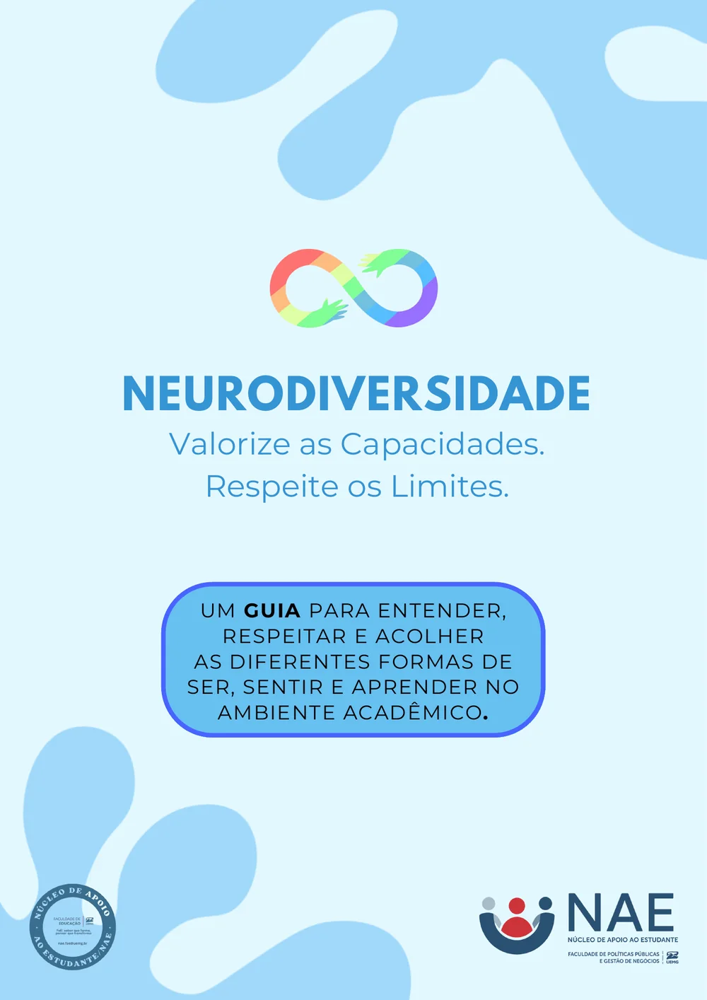
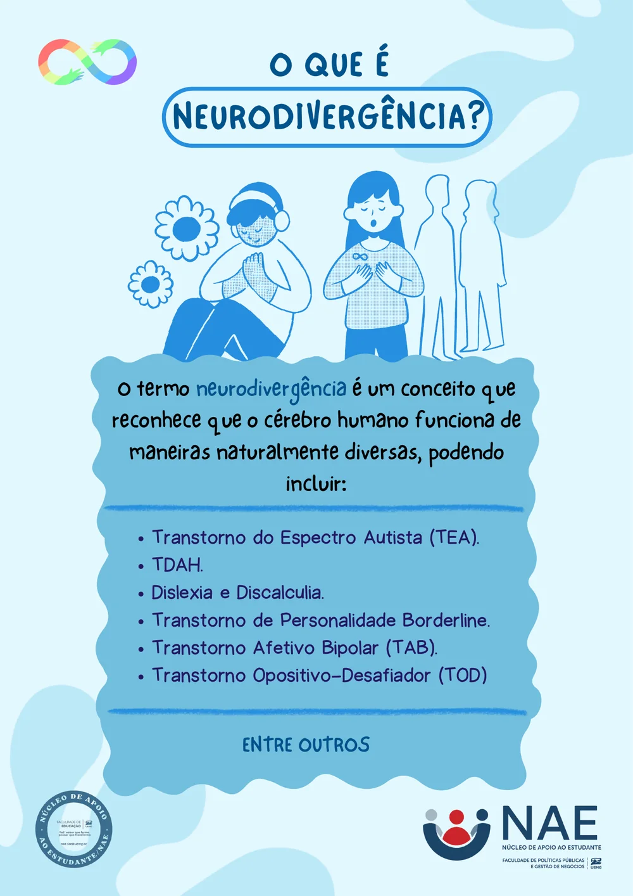
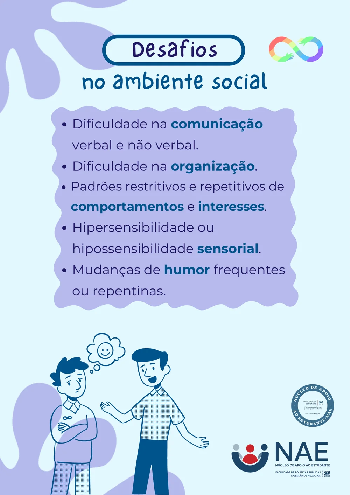
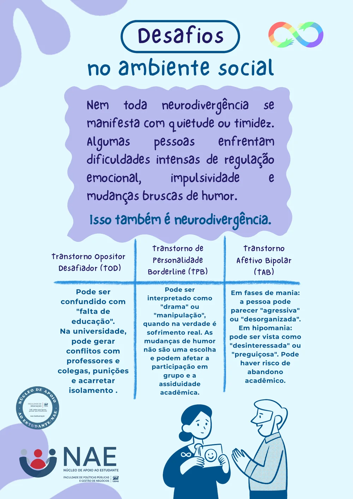
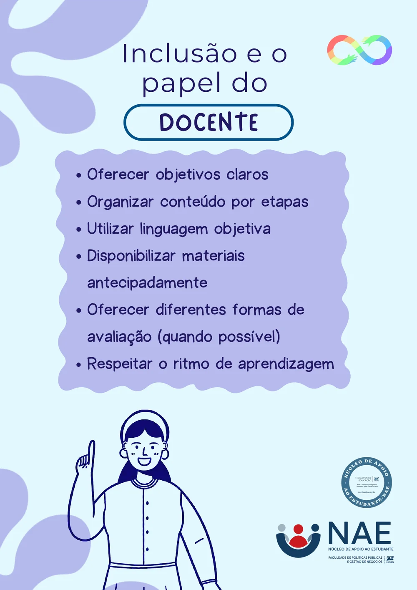
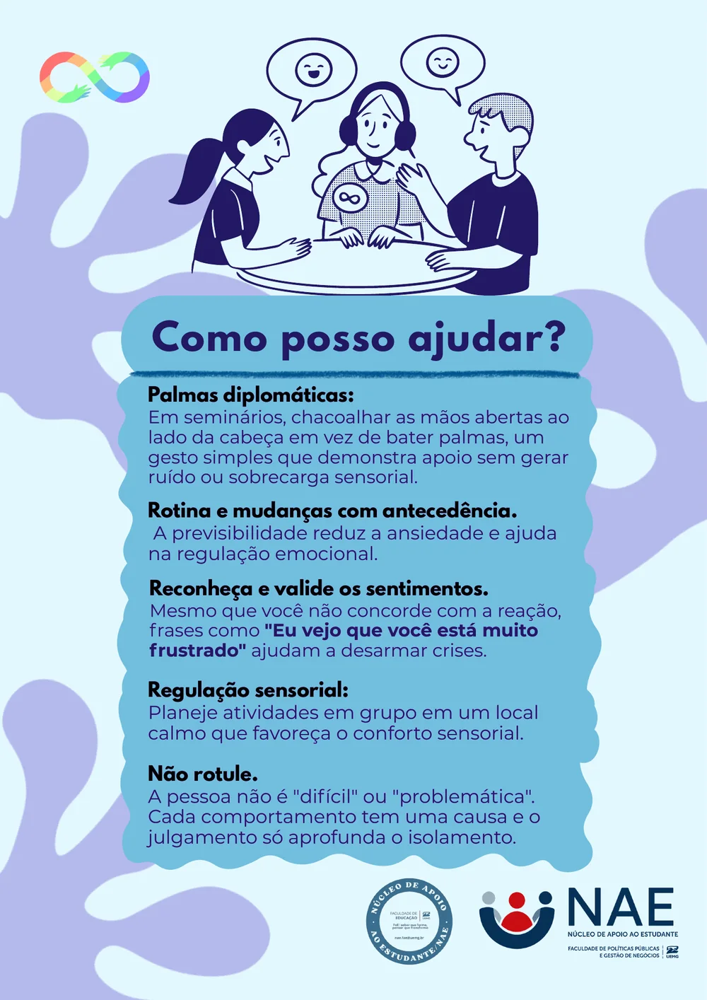
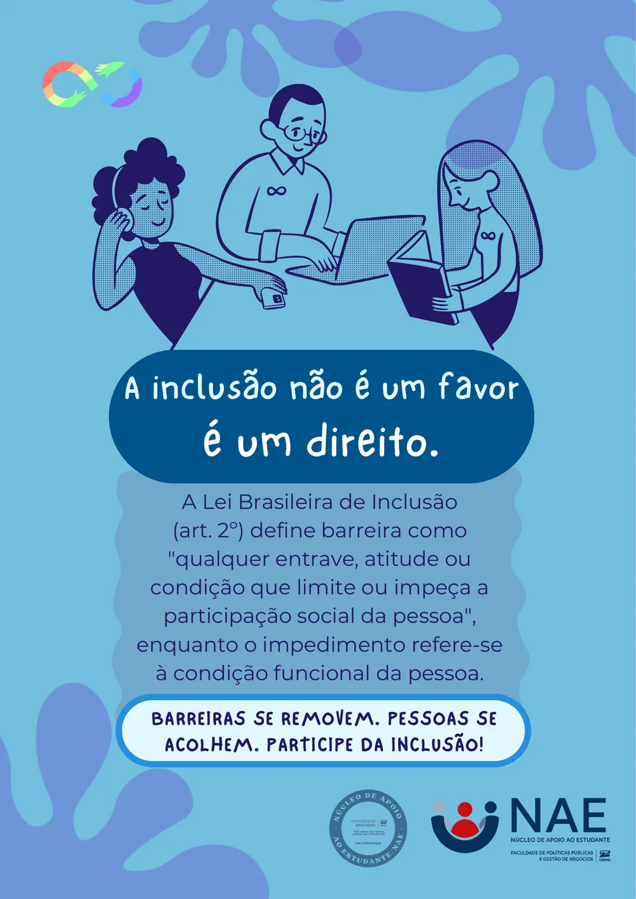

Neurodiversidade
Valorize as capacidades. Respeite os limites.
Um guia para entender, respeitar e acolher as diferentes formas de ser, sentir e aprender no ambiente acadêmico. São 7 páginas: leia aqui mesmo ou baixe o guia para guardar e repassar.
Material dos Núcleos de Apoio ao Estudante da Faculdade de Educação e da Faculdade de Políticas Públicas e Gestão de Negócios da UEMG. PDF com as 7 páginas, 1,4 MB.

Ler o texto desta página
Neurodiversidade. Valorize as capacidades. Respeite os limites.
Um guia para entender, respeitar e acolher as diferentes formas de ser, sentir e aprender no ambiente acadêmico.

Ler o texto desta página
O termo neurodivergência é um conceito que reconhece que o cérebro humano funciona de maneiras naturalmente diversas, podendo incluir:
- Transtorno do Espectro Autista (TEA);
- TDAH;
- Dislexia e Discalculia;
- Transtorno de Personalidade Borderline;
- Transtorno Afetivo Bipolar (TAB);
- Transtorno Opositivo-Desafiador (TOD);
entre outros.

Ler o texto desta página
- Dificuldade na comunicação verbal e não verbal.
- Dificuldade na organização.
- Padrões restritivos e repetitivos de comportamentos e interesses.
- Hipersensibilidade ou hipossensibilidade sensorial.
- Mudanças de humor frequentes ou repentinas.

Ler o texto desta página
Nem toda neurodivergência se manifesta com quietude ou timidez. Algumas pessoas enfrentam dificuldades intensas de regulação emocional, impulsividade e mudanças bruscas de humor. Isso também é neurodivergência.
Transtorno Opositor Desafiador (TOD). Pode ser confundido com "falta de educação". Na universidade, pode gerar conflitos com professores e colegas, punições e acarretar isolamento.
Transtorno de Personalidade Borderline (TPB). Pode ser interpretado como "drama" ou "manipulação", quando na verdade é sofrimento real. As mudanças de humor não são uma escolha e podem afetar a participação em grupo e a assiduidade acadêmica.
Transtorno Afetivo Bipolar (TAB). Em fases de mania, a pessoa pode parecer "agressiva" ou "desorganizada". Em hipomania, pode ser vista como "desinteressada" ou "preguiçosa". Pode haver risco de abandono acadêmico.

Ler o texto desta página
- Oferecer objetivos claros.
- Organizar o conteúdo por etapas.
- Utilizar linguagem objetiva.
- Disponibilizar materiais antecipadamente.
- Oferecer diferentes formas de avaliação (quando possível).
- Respeitar o ritmo de aprendizagem.

Ler o texto desta página
Palmas diplomáticas. Em seminários, chacoalhar as mãos abertas ao lado da cabeça em vez de bater palmas: um gesto simples que demonstra apoio sem gerar ruído ou sobrecarga sensorial.
Rotina e mudanças com antecedência. A previsibilidade reduz a ansiedade e ajuda na regulação emocional.
Reconheça e valide os sentimentos. Mesmo que você não concorde com a reação, frases como "Eu vejo que você está muito frustrado" ajudam a desarmar crises.
Regulação sensorial. Planeje atividades em grupo em um local calmo, que favoreça o conforto sensorial.
Não rotule. A pessoa não é "difícil" ou "problemática". Cada comportamento tem uma causa, e o julgamento só aprofunda o isolamento.

Ler o texto desta página
A inclusão não é um favor, é um direito.
A Lei Brasileira de Inclusão (art. 2º) define barreira como "qualquer entrave, atitude ou condição que limite ou impeça a participação social da pessoa", enquanto o impedimento refere-se à condição funcional da pessoa.
Barreiras se removem. Pessoas se acolhem. Participe da inclusão!
Precisa de apoio ou quer saber como ajudar?
Se você é um estudante neurodivergente e precisa de apoio para acompanhar as aulas, ou se é colega ou professor e quer saber como ajudar, procure o NAE. A conversa é acolhedora e sem julgamento, e o Núcleo ajuda a encaminhar para o que for preciso.